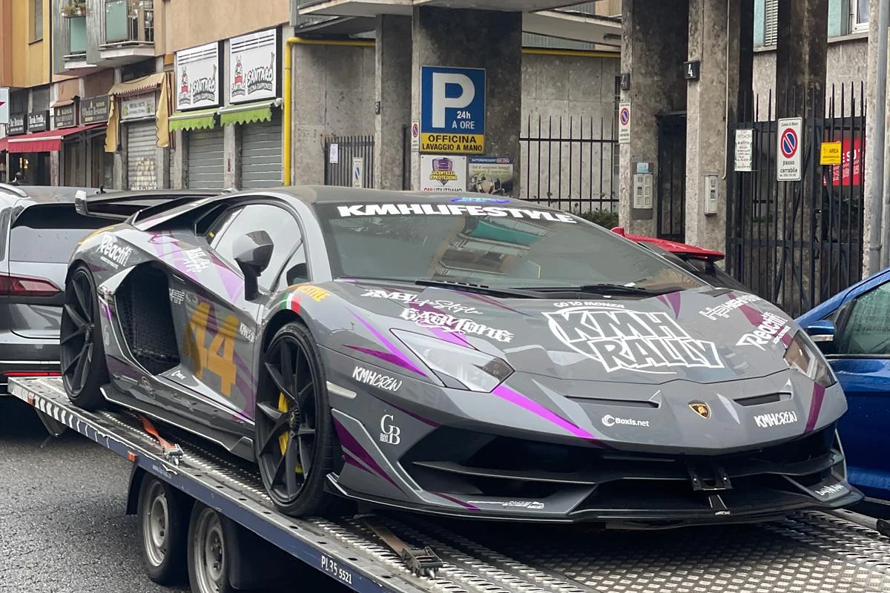
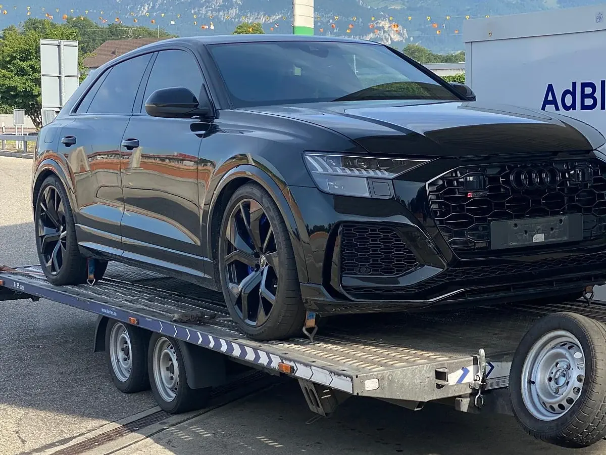

Il tuo veicolo, consegnato dove vuoi tu
Ritiriamo auto e moto all'indirizzo che ci dai e le consegniamo dove servono, in Svizzera e in Europa. Un'utilitaria comprata online, una supercar, una moto d'epoca che non parte da vent'anni: cambia il mezzo, non il modo di trattarlo.
Non siamo una grande azienda di logistica, e è un vantaggio: chi ti risponde su WhatsApp è la stessa persona che guida il mezzo e che ti consegna l'auto. Nessun call center, nessun numero di pratica, nessuna risposta fra tre giorni.

Trasporto supercar e auto di lusso
Per le più delicate abbiamo il carrello chiuso, un Debon Roadster C900: l'auto viaggia coperta, al riparo da pioggia, sale e sguardi indiscreti.
Ferrari, Lamborghini, Porsche, McLaren, Bentley: ognuna ha le sue misure, la sua altezza da terra e i suoi punti di aggancio. Rampe lunghe per chi è basso, protezioni sotto ogni cinghia, fissaggio alle ruote e mai alla carrozzeria.
La maggior parte delle chiamate arriva per spostare l'auto fra due case, per portarla in officina o per consegnarla dopo un acquisto fra privati. Sul mezzo non c'è pubblicità: chi ci incrocia non sa che cosa stiamo trasportando.

Auto d'epoca e veicoli da collezione
Le auto d'epoca quasi mai arrivano su quattro ruote che girano: spesso non partono, hanno i freni bloccati o un cambio che non collabora. Si caricano piano, con il verricello quando serve, e si legano dove la scocca regge davvero.
Le portiamo a raduni, mostre, concorsi d'eleganza e officine di restauro in tutta la Svizzera e in Europa. Durante il viaggio il veicolo è assicurato.
Consegne per concessionari auto
Lavoriamo con concessionari in Ticino, nella Svizzera interna e all'estero per consegnare auto nuove e usate al cliente finale. Una consegna o cinque nello stesso giro: ci organizziamo sul vostro calendario.
Il vantaggio rispetto a una bisarca è semplice: non si aspetta che si riempia. Il veicolo parte quando serve a voi e arriva nel giorno concordato, con le foto al carico e alla consegna.
Consegne veloci entro 24 ore
Hai fretta? Ritiriamo e consegniamo entro il giorno dopo, in tutta la Svizzera. Lo usano i concessionari con una scadenza da rispettare, le officine che aspettano un veicolo per iniziare il lavoro e chi ha appena comprato un'auto e non vuole aspettare.